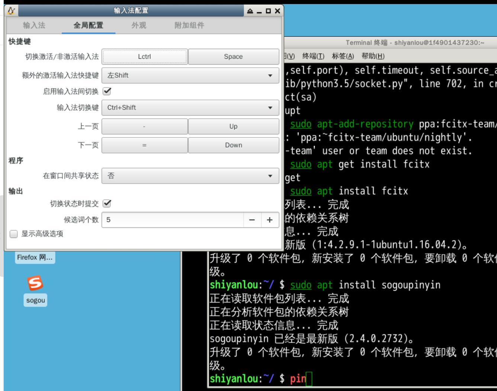
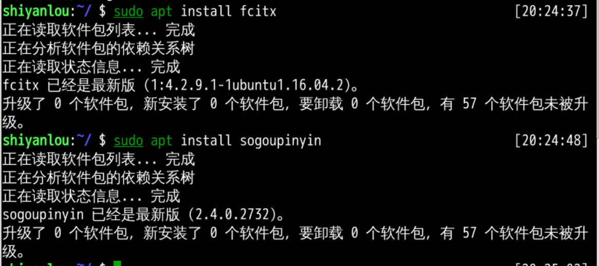
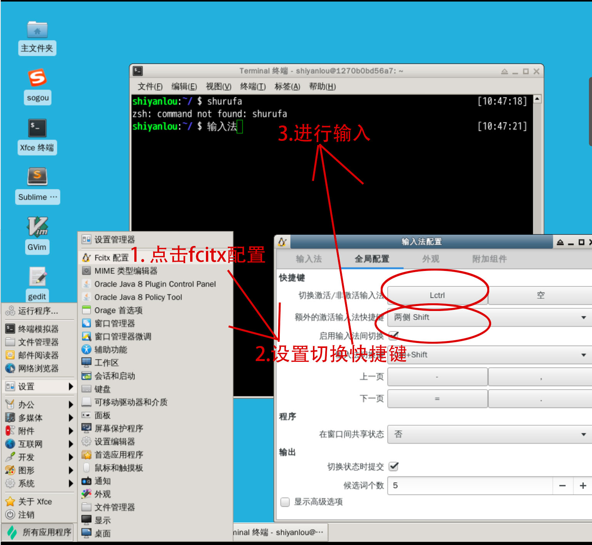
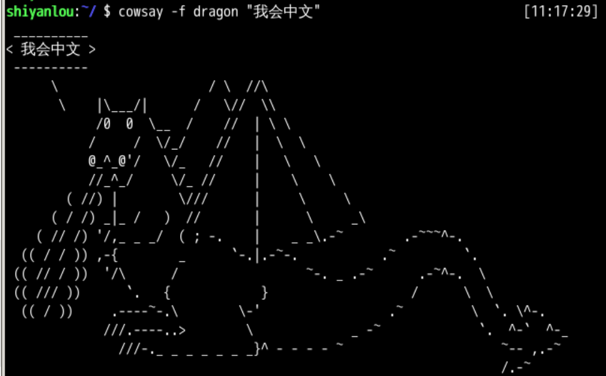
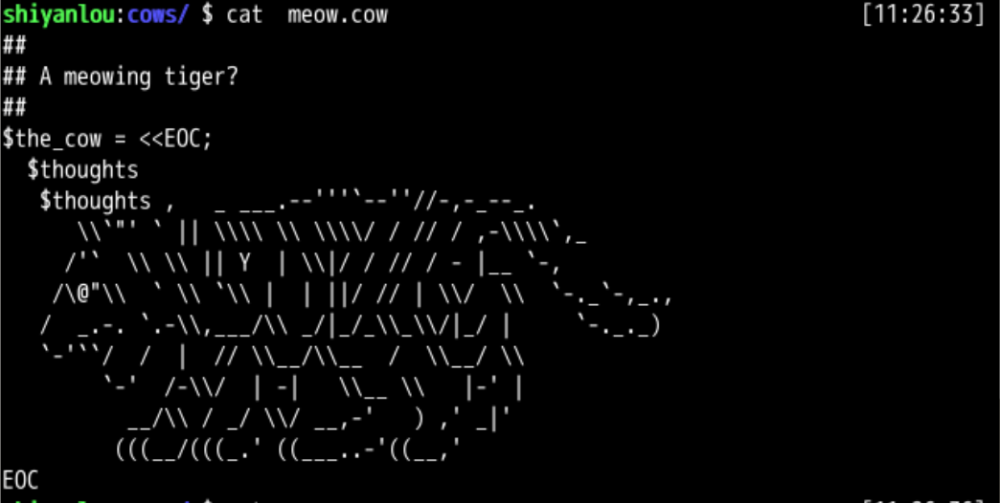

本章回顾
回忆 😌
- 管道的符号是|
- 管道的作用是连接
- 原来应该输出到屏幕内容
- 通过管道流到了另一个命令做为参数
- 是否可以让 cow 说出一些中文呢？
下载安装小企鹅输入法 ✏️fcitx
- 系统已经安装中文输入法了
- 退一步说
- 如果没有安装
- 应该如何安装呢？
- fcitx[ˈfaɪtɪks]
- fcitx是 (Free Chinese Input Toy for X) 的英文缩写
- 中文名为小企鹅输入法
- 是一个以 GPL 方式发布的输入法框架
- 编写它的目是为桌面环境提供一个灵活的输入方案
- 彻底解决在GNU/Linux下没有一个好的中文输入法的问题

下载搜狗输入法 🐶
#直接安装
sudo apt install sogoupinyin

网页安装
#安装 debian package，XXXX指的是下载的名字。
sudo dpkg -i sogoupinyin_XXXX_amd64.deb
#如果存在冲突，进行修复或删除
sudo apt -f install sogoupinyin
配置输入法 ⚙️

运行 sogou，在终端里面就可以输入中文了，让牛作为 dragon 说"我会中文"。

分析牛 🐂 说
#找到牛说的位置
whereis cowsay
#进入牛说的素材文件夹位置
cd /usr/share/cowsay/cows
#查看图形素材文件
cat meow.cow
- /usr/games/cowsay（命令的位置）
- /usr/share/cowsay/cow（素材的位置）
- 动物的形象的文件都在 .cow 文件中，比如 meow.cow

总结 🤨
- 这次输出了中文
- 并且找到了 cowsay 的图像素材的位置 💡
- 我们能否把现实世界的 jpg 图片
- 变成ascii形式的cow文件呢？🤔
- 下次再说！👋